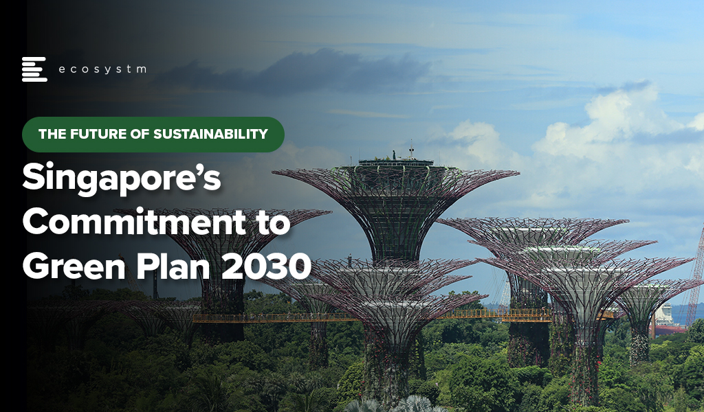

UNSDG Goal 13: Climate Action
Take urgent action to combat climate change and its impacts
About the Goal
The world is on the brink of a climate catastrophe and current actions and plans to address the crisis are insufficient. Without transformative action starting now and within this decade to reduce greenhouse gas emissions deeply and rapidly in all sectors, the 1.5°C target will be at risk and with it the lives of more than 3 billion people. Failure to act leads to intensifying heatwaves, droughts, flooding, wildfires, sea-level rise, and famines. Emissions should already be decreasing now and will need to be cut almost by half by 2030 - a mere seven years from now. To combat climate change and its impacts by 2030, urgent and transformative action is needed to meet the commitments under the Paris Agreement across mitigation and adaptation efforts.
Where are we
The world will exceed 1.5° by 2035 and faces a 2.5°
warning by 2100
What we need
Deep, rapid and sustained GHG(Greenhouse gases) emission reductions by 43% by 2030 and to net zero by 2050
Financial crisis
Global climate finance flows reached an annual average of $803 Billion in 2019-2020. However, developing countries require nearly $6 Trillion by 2030
Risk of submergence
The rate of sea-level rise has doubled in the last decade. Highly vulnerable regions experience 15x higher mortality rates from disasters compared to very low vulnerability regions (2010 - 2020)
Real world example
The Singapore Green Plan 2030 is a plan released by the Government of Singapore on 10 February 2021 that sets targets for sustainability in Singapore by 2030. This "collective whole-of-nation effort" supports Singapore's aim to achieve net zero emissions by 2050. The plan is spearheaded by five Ministries, being the Ministry of Education, Ministry of National Development, Ministry of Sustainability and the Environment, Ministry of Transport and the Ministry of Trade and Industry.
The Singapore Green Plan 2030 has five key pillars, being "City in Nature", "Sustainable Living", "Energy Reset", "Green Economy" and "Resilient Future". They will be enabled by a Green Government and Green Citizenry. Green Government involves Singapore’s government embedding sustainability into key business areas (including procurement) setting more ambitious targets for public infrastructure. Green citizenry includes enabling and empowering Singapore residents to get involved in the sustainability journey, working together to enact the Green Plan.